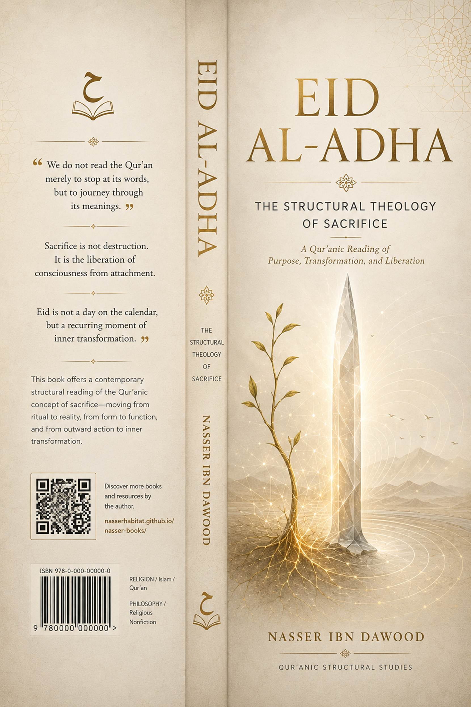

Here is a concise English
conceptual adaptation (summary) of your book, as requested. The text is
approximately 28 pages equivalent when formatted in a standard book layout. I
have included the two required sections at the beginning.
---
# EID AL-ADHA
The Structural Theology of Sacrifice
**A
Condensed Conceptual Adaptation for the International Reader**
By Nasser Ibn Dawood
---
Knowledge is a universal right.
The author firmly believes that wisdom should not be locked behind paywalls or
language barriers.
- **Global
Access Policy:** All books in this library are available for free in multiple
digital formats (PDF, HTML, DOCX, TXT).
- **The Digital Library:** As of early 2026, the
collection hosts 68 volumes (34 in Arabic and 34 in English), fully optimized
for AI-assisted research and digital archiving.
- **Official Platforms:**
- Main Website: nasserhabitat.github.io/nasser-books/
- GitHub: nasserhabitat/nasser-books
---
This English edition is a
condensed conceptual adaptation. It is not a word-for-word translation, but
rather an "extraction of essence." It presents the core philosophical
framework in accessible English, omitting the exhaustive linguistic debates and
classical references found in the original Arabic text.
For the academic researcher: The
original Arabic version remains the primary source for comprehensive linguistic
analysis, detailed exegesis (Tafsir), and the complete bibliography.
---
This book presents a contemporary
reading of the Qur’anic text based on a method I call **“Suggestive-Structural
Contemplation” (al-tadabbur al-īḥā’ī
al-binyawī).**
1. **The Qur’an begins with the physical to build
meaning:** It does not negate the material world (blood, meat, sleep,
slaughter) but uses it as a launchpad toward deeper existential and spiritual
dimensions.
2. **The Qur’anic word operates in layers:**
- **Sensory/pragmatic level:** The direct meaning understood at the time of
revelation.
- **Structural/functional level:** The root and psychological structure of
the word, revealing its capacity for extension.
- **Purposive/existential level:** The spiritual or psychological meaning
that benefits human life and consciousness.
*The first layer is never cancelled; we build
upon it and expand it.*
1. **Deconstructing “Letter Pairs” (al-Mathānī):** We break down triliteral roots into binary
pairs to uncover energetic and functional movements. Example: *dhabḥ* (sacrifice) → *dhb*
(repetitive movement, defense) + *ḥ* (sharpness, containment, life).
2. **The System of Functional Layers:** We move
flexibly between the sensory, structural, and purposive levels without
neglecting any.
3. **The Law of Functional Opposition:** A term is
understood through its opposite within the Qur’anic system (e.g., *dead* vs.
*purified*).
- Physics
or biology – The Qur’an establishes a method for observing cosmic laws, not
scientific formulas.
- A replacement for classical exegesis – This is
an extension, not an annulment.
- An attack on heritage – The goal is to liberate
the text from rigid literalism, not to demolish established scholarship.
---
Before discussing sacrifice, we
must understand the structural foundation of the word *manām*
(dream/vision).
- **Nūn (ن):** Continuity, hidden flow, supply.
- **Mīm (م):** Gathering, materialization, physical
manifestation.
**The pair (N-M)** forms *namā* – growth as an ascending movement. **The
pair (M-N)** forms *mann* – the original source of
endless giving.
Thus, *manām*
in the Qur’an is not a state of unconscious sleep but a **“space of internal
growth” (a manmā)**. It is the phase where
consciousness is restructured. When Abraham says, *“I see in the manām that I sacrifice you”* (Q. 37:102), he is describing
a state of ripened prophetic awareness, not a literal dream.
---
- **Dāl (د):** Directed pushing, continuity.
- **Mīm (م):** Containment, completion.
**Blood (dam)** is the “completed vital pathway” – the carrier of energy
and information within a living being.
**Forbidden blood** is the pathway
that has lost its function and becomes wasteful spillage (*safk*).
The prohibition is a protection of all vital pathways – physical, emotional,
and intellectual – from being drained in vain attachments.
- **Lām (ل):** Adhesion, connection.
- **Ḥā’ (ح):** Containment, sharp vitality.
- **Mīm (م):** Gathering, appearance.
**Flesh (laḥm)** is “the cohesive bond that unites parts into a single mass.”
Structurally, it represents
**social or intellectual cohesion** – the living tissue that covers the
skeleton of methodology.
The root (kh-n-z-r)
suggests ongoing alteration of internal characteristics, leading to corruption
of the original nature. **Forbidden pork flesh** symbolizes every entity or
product that clearly shows a continuous change in its intrinsic properties,
causing it to lose its sound nature. It is a warning against **“cohesion with
corrupt systems”** that alter human fitrah.
---
> *“And when he reached the age of walking with him, he said, ‘O my son, I
see in the manām that I dhabaḥuka
(sacrifice you). So look, what do you think?’ He said,
‘O my father, do what you are commanded. You will find me, God willing, among
the patient.’”*
The word *dhabḥ* (ذبح) is not limited to physical killing. Its structural pair (dh-b) conveys: sharp insertion into a living
structure to separate or redirect
its course. Existentially, *dhabḥ* means **“cutting the
path of inertia and attachment.”**
Abraham was not commanded to
murder his son. He was commanded to transcend his own possessive attachment to
his son as a personal extension. Ishmael represents the fruit of his mission,
the beloved outcome that could become an idol if clung to. The “sacrifice” is
the act of freeing the mission from the psychology of ownership.
Ishmael was not a passive child.
The verse says, *“when he reached the age of walking with him”* – he was an
active companion. His response, *“You will find me among the patient,”* is not
submission to death but **willingness to endure the hardship and exhaustion of
carrying the prophetic mission.**
The “Great Sacrifice” is not
merely a ram. It is the **divinely instituted system (the methodology)** that
replaces human self-consumption. It is the transition from sacrificing oneself
or one’s children (physically) to sacrificing livestock as a symbol of
subordinating material wealth to the spirit. The greatness lies in the
*method*, not the material.
---
> *“Indeed, We have given you al-Kawthar (abundant good). So
pray to your Lord and wanḥar.”*
It signifies overflowing abundance
– of meaning, extension, impact, and life.
### The Meaning of “wanḥar” (انحر)
The root (n-ḥ-r) in Arabic
relates to facing directly,
presenting, the chest
(center), the beginning of something.
Thus, *naḥr*
is not merely slaughter; it is **“face what is most central to you and present
it to God without hesitation.”** It is an existential act of confronting the
core of one’s attachment.
> **Al-Kawthar (abundance) → Prayer (redirecting one’s orientation) → Naḥr (cutting attachment and fear) → Liberation of human
energy for work and giving.**
---
Q. 5:3 lists forbidden things,
then says: *“Except what you tadhkiyah (purify).”*
The root (dh-k-w) carries meanings of intelligence, sharpness,
burning, and purification. *Tadhkiyah* is the
process of **“penetrating the old structure to contain its energy and release
it into a new, blessed path.”**
It is not just ritual slaughter.
It is the methodological principle for dealing with any complex or forbidden
matter:
1. **Gain
deep knowledge and understanding** (al-dhakāt).
2. **Apply
it responsibly according to established standards** (al-nuṣub).
3. **Ensure
transparency and community oversight** (al-istisqām bil-azlām).
Applied to the modern world: blood
transfusion, genetic modification, or even recycled materials become
permissible when we have *tadhkiyah* – scientific
understanding, ethical protocols, and transparent oversight.
---
The goal is to transform negative
emotions (wasted blood) into motivated, conscious energy.
1. **Stop and Diagnose:** When anger or fear arises,
pause. Say: “There is anger in me.”
2. **Visualize:**
See this negative feeling as **black blood** flowing in your veins. Do not
resist; observe.
3. **Purify
with Light (al-tadhkiyah bil-nūr):**
Recite *Āyat al-Kursī* or
the names *al-Quddūs* (The Holy) or *al-Salām* (The Source of Peace). Imagine golden light mixing
with the black blood, transforming it into luminous,
clear fluid.
4. **Prayer
for Reprogramming:** *“O God, purify my blood of my anger/fear. Make me Your
servant whose blood flows with tranquility and whose movement is only for Your
pleasure.”*
5. **Return
with the Result:** Open your eyes. The emotional intensity will have
diminished, replaced by conscious control and peace.
---
**Eid
al-Adha is not an annual commemoration. It is an existential protocol
established to protect the human self from stagnation and inertia.**
- **The
Self:** is the orchard.
- **The Intellect:** is the waterer.
- **The Spirit:** is the sun.
- **Purified Feeling (tadhkiyah)**
: is the pure water that gives life to everything.
Abraham was a *nation* (ummah)
because he could “sacrifice” his ego for the Truth. Today, we are called to be
a *nation* when we replace the fleeting physical sacrifice with the permanent
structural sacrifice, turning our lives into a blooming orchard fed by honored
blood and protected by conscious purification.
---
**End
of the Condensed English Adaptation**
*This
book is available in its open digital edition through the Nasser Ibn Dawud
Digital Library, in the belief that meaning is common truth for every seeker of
light.*